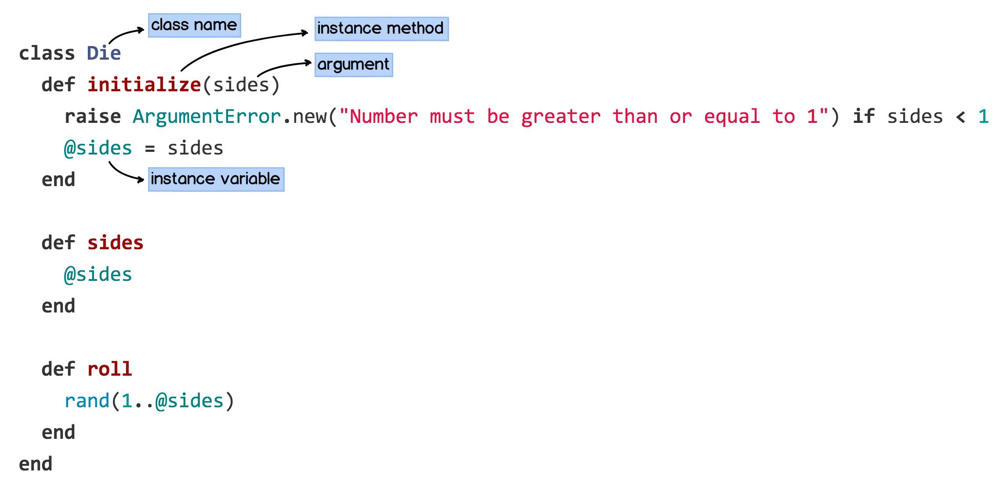

Ruby: Classes
Intro
Ruby is an object oriented programming language. Like most modern programming languages including C/C++, Java, C#, etc. Ruby, also, includes classes and objects. To get started, let’s define a class in Ruby and learn the types of variables we can set within a Ruby class.
Class Definition
In Ruby, classes start with the keyword class followed by the class name and it ends with the keyword end.
class Die end
Variables
There are four types of variables we can use within a Ruby class:
- Local variables: set and used within a method
- Instance variables: set and used within methods for a particular instance or object; preceded by @ sign
- Ex: @sides
- Class variables: set and used within a class; preceded by @@ sign
- Ex: @@sides
- Global variables: set and used outside a class; can be accessed by different classes and are preceded by a $ sign
- Ex: $sides
Instance Methods
Next, let’s learn about creating methods within a class in Ruby. Let us take a closer look at the problem from Devbootcamp’s phase 0, unit 2, exercise 1:
Problem
Implement a basic Die class which can be initialized with some number of sides. We can then roll the die, returning a random number.
Solution
 In the example above, three instance methods were written to solve the given problem. Now, in order to call the instance methods, we need to call the “new” method to create an object. [New is a class method and it is used to create an instance or an object which is required to call the instance methods.] For ex:
p Die.sides #=> NoMethodError p Die.new(6).sides #=> 6